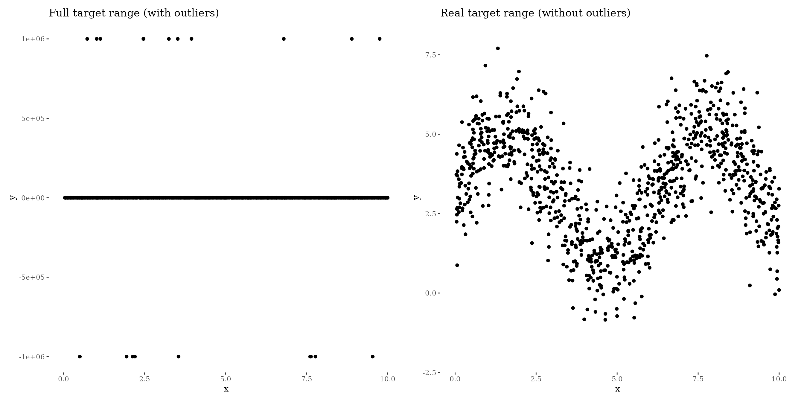
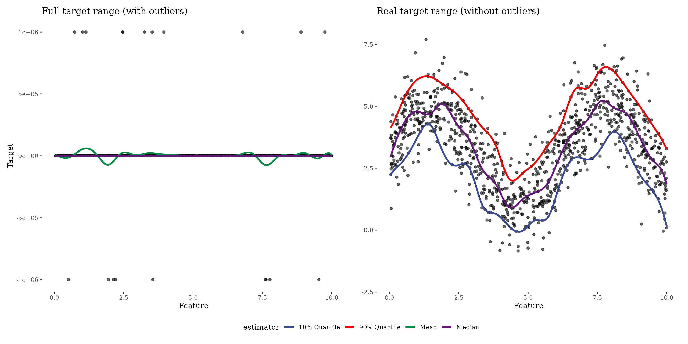

Quantile/Robust regression
basic-robust-reg.Rmd## Loading required package: mlr3How does it work?
Predicting quantiles is controlled by the choice of the loss function. Quantile regression was originally motivated for general additive/linear models (see here). We use that to define the following loss function:
\[ L(y, f(x)) = h|y - f(x)| \] with \[ h = \left\{ \begin{array}{ccc} 2q & \ \ \text{if} \ \ & y - f(x) > 0 \\ 2(1 - q) & \ \ \text{if} \ \ & \text{otherwise} \end{array} \right. \] with \(q\) the q-quantile. Visualizing the loss for \(y - f(x)\) shows that, e.g., boosting the 90 % quantile punishes residuals harder than residuals smaller then zeros which leads to an optimization of the 90 % quantile:

Simulate data
To show the effect of quantile/robust regression we simulate data that follows a sinus curve with 20 outliers:
nsim = 1000
noutlier = 20
outlier_mean = 1e6
x = runif(nsim, 0, 10)
y = 3 + 2 * sin(x) + rnorm(nsim, 0, 1)
outlier_idx = sample(nsim, noutlier)
y[outlier_idx] = sample(x = c(-1, 1), size = noutlier, replace = TRUE) * rnorm(noutlier, outlier_mean, 1)
df = data.frame(x = x, y = y)#> Warning: Removed 20 rows containing missing values (`geom_point()`).
How to use
Boosting the median
All you need to do is to use the LossQuantile class
generator. For example, to boost the median (50 % quantile) pass
0.5 to the constructor:
loss_quantile50 = LossQuantile$new(0.5)
loss_quantile50
#> LossQuantile: L(y,x) = h|y - f(x)|
#>
#> h = 2q if y - f(x) > 0
#> h = 2(1 - q) otherwise
#>
#> with quantile q = 0.5A little side note: Boosting the median or the 50 % quantile is equivalent to conduct boosting with the absolute loss.
The loss_quantile90 loss object can now be used to
define and train a new Compboost object:
cboost_quantile50 = boostSplines(data = df, target = "y", loss = loss_quantile50, iterations = 1000L, trace = 200L)
#> 1/1000 risk = 2e+04 time = 0
#> 200/1000 risk = 2e+04 time = 12172
#> 400/1000 risk = 2e+04 time = 25284
#> 600/1000 risk = 2e+04 time = 39740
#> 800/1000 risk = 2e+04 time = 55493
#> 1000/1000 risk = 2e+04 time = 72516
#>
#>
#> Train 1000 iterations in 0 Seconds.
#> Final risk based on the train set: 2e+04Using quantiles, or the absolute loss for median, is also known as
robust regression. To visualize the effect of outliers on the
regression, we also train a model with the
QuadraticLoss:
cboost_mean = boostSplines(data = df, target = "y", iterations = 1000L, trace = 0)
#> Train 1000 iterations in 0 Seconds.
#> Final risk based on the train set: 9.8e+09
df_plot = data.frame(
feature = rep(x, times = 2),
preds = c(cboost_mean$predict(), cboost_quantile50$predict()),
estimator = rep(c("mean", "median"), each = length(x))
)
library(ggsci)
gg1 = ggplot() +
geom_point(data = df, aes(x = x, y = y), show.legend = FALSE, alpha = 0.5) +
geom_line(data = df_plot, aes(x = feature, y = preds, color = estimator), size = 1.2) +
ggtitle("Full target range (with outliers)")
#> Warning: Using `size` aesthetic for lines was deprecated in ggplot2 3.4.0.
#> ℹ Please use `linewidth` instead.
gg2 = ggplot() +
geom_point(data = df, aes(x = x, y = y), show.legend = FALSE, alpha = 0.5) +
geom_line(data = df_plot, aes(x = feature, y = preds, color = estimator), size = 1.2) +
ggtitle("Real target range (without outliers)") +
ylim(-2, 8)
(gg1 | gg2) +
plot_layout(guides = "collect") &
theme(legend.position = "bottom") &
theme_tufte() &
scale_color_jama()
#> Warning: Removed 20 rows containing missing values (`geom_point()`).
#> Warning: Removed 1000 rows containing missing values (`geom_line()`).Boosting with the quadratic loss is quite sensitive against outliers. Of course, this example is very exaggerated to show the effect of boosting the median.
Boosting arbitrary quantiles
Instead of boosting the median we can boost any quantile we like. In the following example, we boost the 10 % and 90 % quantile to get “some kind of confidence interval”. Be careful with using the term confidence interval here. All predictions are estimated independently which may tighten the boundaries:
cboost = boostSplines(data = df, target = "y", iterations = 1000, trace = 0)
#> Train 1000 iterations in 0 Seconds.
#> Final risk based on the train set: 9.8e+09
cboost_10 = boostSplines(data = df, target = "y", loss = LossQuantile$new(0.1), iterations = 1000, trace = 0)
#> Train 1000 iterations in 0 Seconds.
#> Final risk based on the train set: 1.8e+04
cboost_50 = boostSplines(data = df, target = "y", loss = LossQuantile$new(0.5), iterations = 1000, trace = 0)
#> Train 1000 iterations in 0 Seconds.
#> Final risk based on the train set: 2e+04
cboost_90 = boostSplines(data = df, target = "y", loss = LossQuantile$new(0.9), iterations = 1000, trace = 0)
#> Train 1000 iterations in 0 Seconds.
#> Final risk based on the train set: 2.2e+04
df_pred = data.frame(
feat = rep(x, 4),
target = rep(y, 4),
pred = c(cboost$predict(), cboost_10$predict(), cboost_50$predict(), cboost_90$predict()),
estimator = rep(c("Mean", "10% Quantile", "Median", "90% Quantile"), each = 1000L))
gg1 = ggplot() +
geom_point(data = df_pred, aes(x = feat, y = target), alpha = 0.2) +
geom_line(data = df_pred, aes(x = feat, y = pred, color = estimator), size = 1.2) +
xlab("Feature") +
ylab("Target") +
ggtitle("Full target range (with outliers)")
gg2 = ggplot() +
geom_point(data = df_pred, aes(x = feat, y = target), alpha = 0.2) +
geom_line(data = df_pred, aes(x = feat, y = pred, color = estimator), size = 1.2) +
ylim(-2, 8) +
xlab("Feature") +
ylab("") +
ggtitle("Real target range (without outliers)")
(gg1 | gg2) +
plot_layout(guides = "collect") &
theme_tufte() &
theme(legend.position = "bottom") &
scale_color_aaas()
#> Warning: Removed 80 rows containing missing values (`geom_point()`).
#> Warning: Removed 1000 rows containing missing values (`geom_line()`).
Comments
Boosting the median is a technique to get a more robust model.
Nevertheless, boosting the mean has some nice estimation properties.
More variance in the estimators is introduced if we use the quantile
loss. To get precise predictions, we need more data to reduce the
variance. Another loss superior in terms of variance is the Huber loss
LossHuber$new() which uses a quadratic approximation at
around zero and a linear extrapolation after a threshold \(\delta\).